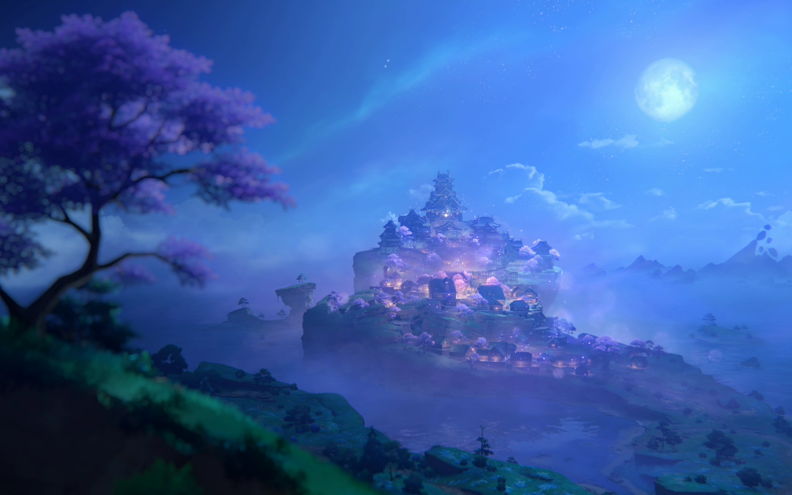

Описание
Инадзума - закрытый островной регион, связанный с элементом Электро. Здесь правят идеалы вечности, а покровительница - Баал, она же Райдэн Эи.
Ключевые факты
- Элемент: Электро (молния)
- Архонт: Баал (Райдэн Эи)
- Основная фракция: Сёгунат Инадзумы
- Известные персонажи: Райдэн Сёгун, Кокоми, Яэ Мико, Кадзуха
Вернуться к списку регионов.